How do we quantify the similarity between two documents in this vector space? A first attempt might consider the magnitude of the vector difference between two document vectors. This measure suffers from a drawback: two documents with very similar content can have a significant vector difference simply because one is much longer than the other. Thus the relative distributions of terms may be identical in the two documents, but the absolute term frequencies of one may be far larger.
To compensate for the effect of document length, the standard way of quantifying the similarity between two documents
The effect of the denominator of Equation 24 is thus to length-normalize the vectors  and to unit vectors
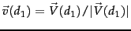 and
. We can then rewrite (24) as
and to unit vectors
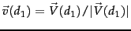 and
. We can then rewrite (24) as
Worked example. Consider the documents in Figure 6.9 . We now apply Euclidean normalization to the tf values from the table, for each of the three documents in the table. The quantity has the values 30.56, 46.84 and 41.30 respectively for Doc1, Doc2 and Doc3. The resulting Euclidean normalized tf values for these documents are shown in Figure 6.11 .
End worked example.
Thus, (25) can be viewed as the dot product of the normalized versions of the two document vectors. This measure is the cosine of the angle between the two vectors, shown in Figure 6.10 . What use is the similarity measure
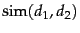? Given a document  (potentially one of the 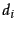 in the collection), consider searching for the documents in the collection most similar to
(potentially one of the 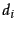 in the collection), consider searching for the documents in the collection most similar to  . Such a search is useful in a system where a user may identify a document and seek others like it - a feature available in the results lists of search engines as a more like this feature. We reduce the problem of finding the document(s) most similar to
. Such a search is useful in a system where a user may identify a document and seek others like it - a feature available in the results lists of search engines as a more like this feature. We reduce the problem of finding the document(s) most similar to  to that of finding the with the highest dot products (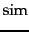 values)
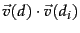. We could do this by computing the dot products between 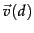 and each of
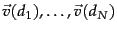, then picking off the highest resulting values.
to that of finding the with the highest dot products (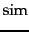 values)
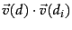. We could do this by computing the dot products between 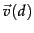 and each of
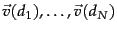, then picking off the highest resulting values.
Worked example. Figure 6.12 shows the number of occurrences of three terms (affection, jealous and gossip) in each of the following three novels: Jane Austen's Sense and Sensibility (SaS) and Pride and Prejudice (PaP) and Emily Brontë's Wuthering Heights (WH). Of course, there are many other terms occurring in each of these novels. In this example we represent each of these novels as a unit vector in three dimensions, corresponding to these three terms (only); we use raw term frequencies here, with no idf multiplier. The resulting weights are as shown in Figure 6.13.
Now consider the cosine similarities between pairs of the resulting three-dimensional vectors. A simple computation shows that sim( (SAS),
(SAS),  (PAP)) is 0.999, whereas sim(
(PAP)) is 0.999, whereas sim( (SAS),
(SAS),  (WH)) is 0.888; thus, the two books authored by Austen (SaS and PaP) are considerably closer to each other than to Brontë's Wuthering Heights. In fact, the similarity between the first two is almost perfect (when restricted to the three terms we consider). Here we have considered tf weights, but we could of course use other term weight functions. End worked example.
(WH)) is 0.888; thus, the two books authored by Austen (SaS and PaP) are considerably closer to each other than to Brontë's Wuthering Heights. In fact, the similarity between the first two is almost perfect (when restricted to the three terms we consider). Here we have considered tf weights, but we could of course use other term weight functions. End worked example.
Viewing a collection of  documents as a collection of vectors leads to a natural view of a collection as a term-document matrix and jealousy would under stemming be considered as a single dimension. This matrix view will prove to be useful in Chapter 18 .
documents as a collection of vectors leads to a natural view of a collection as a term-document matrix and jealousy would under stemming be considered as a single dimension. This matrix view will prove to be useful in Chapter 18 .